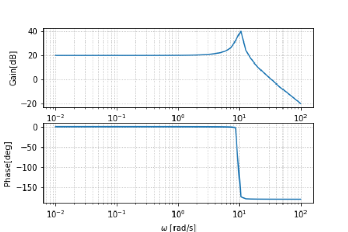
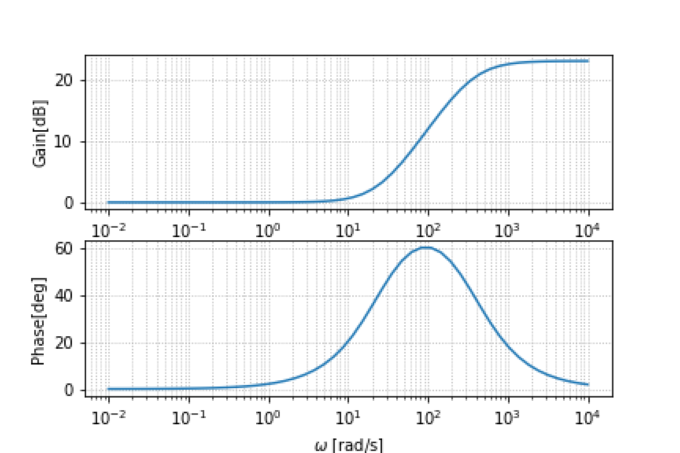

フィードバック制御系の設計
前回で制御系が不安定であることがわかりました。これを安定にするためには、制御系を設計しなおさなければいけません。
今回はフィルターを工夫することで制御系を安定にすることができます。
具体的には、位相余裕 40~60[deg]、ゲイン余裕 10~20[dB]、UGF 30~40[rad/s]の制御系に設計したいです。
まずは、フィルターのゲインを10[dB]にしてみます。この時の一巡伝達関数の周波数特性をボード線図で見ます。
フィルター10[dB]の一巡伝達関数のボード線図
UGFは約35rad/sで大きくなっていることがわかります。UGFの条件は満たせました。ゲインを上げることによってUGFを大きくすることができることがわかります。
しかし、ゲインだけでは位相は変わりません。そのため位相余裕は0で、制御系は不安定なままです。
そこで位相を特定の周波数帯域で進められたり、遅らせたりできれば制御系の不安定性を改善できます。
これを実現するために位相進み補償と位相遅れ補償があります。今回は位相を進ませたいので、位相進み補償を用います。
(位相遅れ補償についてはおまけを参照)
位相進み補償の伝達関数のボード線図を以下に示します。
位相進み補償の伝達関数のボード線図
伝達関数は$K_1 = \frac{T_1 s + 1}{\beta T_1 s +1}$です。この式から零点と極が存在することがわかります。
また、どの周波数($=\omega_s$)でどれくらい位相を進めるか($=\theta_s$)を以下のように計算することができます。
\begin{align}
\omega_s &= \frac{1}{T_1 \sqrt{\beta}}\\
\theta_s &= sin^{-1}\frac{1-\beta}{1+\beta}
\end{align}
今回は$\omega_s = 100[rad/s],\theta_s = 60^{\circ}$とします。これを踏まえたうえで、フィルターのゲイン10dBという条件に加えて、位相進み補償を加えます。
複数の並列に繋がっている伝達関数は足し算で表すことができるので、10dBの伝達関数と位相進み補償の伝達関数の足し算を見ればいいことがわかります。その結果は以下のようになります。
 フィードバック制御系の伝達関数
今まで同様にまずUGFを確認します。すると約50Hzくらいと条件を満たせていることがわかります。次に、その時の位相余裕を確認します。すると、約$60^{\circ}$と位相余裕の条件も満たせていることがわかります。
つまり、制御系を安定にすることができたのです。こうして、制御系の設計をし、実際に制御をしていきます。
制御系の設計を行う上で重要だと考えていることは、十分な位相余裕を持たせることができるか、それを達成するために適切な回路(フィルター)が選択されているかの2点です。
フィードバック制御系の伝達関数
今まで同様にまずUGFを確認します。すると約50Hzくらいと条件を満たせていることがわかります。次に、その時の位相余裕を確認します。すると、約$60^{\circ}$と位相余裕の条件も満たせていることがわかります。
つまり、制御系を安定にすることができたのです。こうして、制御系の設計をし、実際に制御をしていきます。
制御系の設計を行う上で重要だと考えていることは、十分な位相余裕を持たせることができるか、それを達成するために適切な回路(フィルター)が選択されているかの2点です。